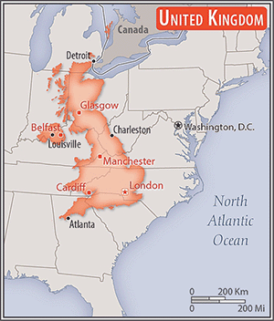

Introduction
The UK of Great Britain and Northern Ireland was born of the unification of the Kingdoms of England and Scotland, which previously had been distinct states joined in a personal union, under the Acts of Union in . The island of Ireland, also joined via a personal union, was incorporated under the Acts of Union in , while Wales had been part of the Kingdom of England since the 16th century.
The UK has historically played a leading role in developing parliamentary democracy and in advancing literature and science. The 18th and 19th centuries saw the rapid expansion of the British Empire despite the loss of the Thirteen Colonies, and at its zenith in the early 20th century, the British Empire stretched over one-fourth of the earth's surface.
The first half of the 20th century saw two World Wars seriously deplete the UK's strength and the Irish Republic withdraw from the union. The second half witnessed the dismantling of the Empire and the UK rebuilding itself into a modern and prosperous European nation.
The UK ws an active member of the EU after its accession in . However, motivated in part by frustration at a remote bureaucracy in Brussels and massive migration into the country, UK citizens on voted to leave the EU. The UK became the only country to depart the EU on , after prolonged negotiations on economic and security relationships had been hammered out.
Geography
Natural Resources
- coal
- petroleum
- natural gas
- iron ore
- lead
- zinc
- gold
- tin
- limestone
- salt
- clay
- chalk
- gypsum
- potash
- silica sand
- slate
- arable land
Comparative Area
In comparison to the United States' geography, the area of the United Kingdom is twice the size of Pennsylvania and slightly smaller than Oregon.
